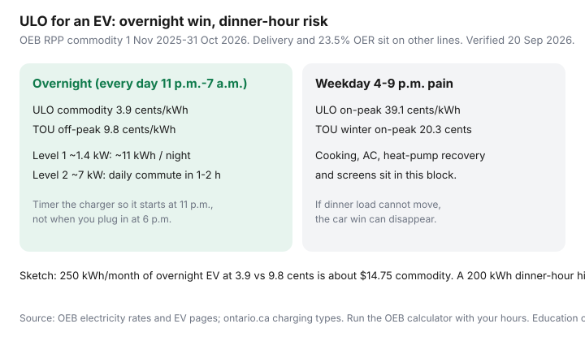

Utilities · Canada
Is Ontario’s Ultra-Low Overnight plan worth it if you charge an EV at home?
Ontario EV owners see 3.9 ¢ overnight and file for Ultra-Low Overnight before they look at dinner. ULO’s weekday 4–9 p.m. block is 39.1 ¢ (OEB RPP, 1 Nov 2025–31 Oct 2026). The oven, the heat-pump recovery, and a Level 2 charger that starts when you plug in at 6:10 p.m. all sit in the most expensive five hours on the Ontario clock.
This is bill-plan math for home charging — light overlap with Transportation is fine; the decision is still the hydro plan. Pair it with the OEB calculator workflow and, if you need a 240 V circuit, Level 2 install cost. It is not a U.S. time-of-use primer and not a charger-brand pitch.
Disclosure: Energy monitors and smart thermostats are offer types that can help you shift or see usage. Saving Optimizer may earn a commission if we later add partner links. We do not currently claim thermostat-brand, charger-brand, or utility partnerships. This is education, not a rate quote.
Key takeaways
- ULO overnight commodity is 3.9 ¢ every day 11 p.m.–7 a.m. TOU off-peak is 9.8 ¢ (evenings 7 p.m.–7 a.m., plus weekends). The EV win is real if the plug is on a timer.
- ULO weekday 4–9 p.m. is 39.1 ¢ vs TOU winter on-peak 20.3 ¢. Cooking, screens, AC, and heat-pump or baseboard recovery after work can erase the charging win.
- Level 1 (~1.4 kW) can put about 11 kWh in the eight-hour window. Level 2 (~7 kW) can cover a typical daily commute in one or two hours — and can also dump 30 kWh into the 39.1 ¢ block if it starts at 6 p.m.
- The plan is for the whole account, not “just the car.” A condo that cooks at 6 p.m. is a different file than a detached house that pre-heats at 3 p.m. and charges at 1 a.m.
- Tiered (12.0 ¢ then 14.2 ¢) still wins for low-EV, daytime-heavy homes that cannot move load. Re-check at each 1 November price reset.
ULO rate bands vs TOU: overnight win and weekday evening spike
ULO has four prices and does not flip hours with the season. TOU has three prices and flips 1 May / 1 November. Commodity only, 1 Nov 2025–31 Oct 2026:
| Clock | Cheap window | Pain window |
|---|---|---|
| ULO | 11 p.m.–7 a.m. every day at 3.9 ¢; weekends 7 a.m.–11 p.m. at 9.8 ¢ | Weekdays 4–9 p.m. at 39.1 ¢ |
| TOU | Weekdays 7 p.m.–7 a.m. plus weekends/holidays, 9.8 ¢ | Winter weekdays 7–11 a.m. and 5–7 p.m. at 20.3 ¢; summer afternoons 11 a.m.–5 p.m. at 20.3 ¢ |
| Tiered | 12.0 ¢ up to 600 kWh (summer) or 1,000 kWh (winter) | 14.2 ¢ after the threshold — the clock does not matter |
Labelled sketch, not your bill: 250 kWh of overnight EV at 3.9 ¢ instead of 9.8 ¢ is about $14.75 / month on commodity. Two hundred weekday dinner-hour kWh at 39.1 ¢ instead of 20.3 ¢ is about $37.60 the other way. Delivery does not move. OER still applies to both RPP options.

Model EV kWh: Level 1 vs Level 2 overnight charging windows
Ontario’s charging page (used 20 Sep 2026): Level 1 is a regular 120 V outlet, about 5–8 km of range per hour. Level 2 is 240 V, about 35 km per hour on a typical home circuit. Alectra’s EV explainer puts Level 1 around 1.4 kW on a 12 A circuit and Level 2 commonly 3.8–7.7 kW depending on breaker and the car’s onboard charger.
- Level 1, eight-hour ULO window: 1.4 kW × 8 h ≈ 11 kWh. Enough for many 40–60 km commutes, not for a 70 kWh battery you flattened on a highway trip.
- Level 2 at ~7 kW: a 15–20 kWh daily commute is two to three hours. Start it at 11 p.m. and you are done long before 7 a.m. Start it at 6 p.m. and you have bought 7 kWh at 39.1 ¢ before the cheap window opens.
- PHEV: a small pack often finishes on Level 1 overnight regardless of plan. ULO still reprices the house.
Schedule in the car or the charger. “I plug in when I get home” is a TOU-off-peak habit (after 7 p.m.) and a ULO-on-peak disaster (before 9 p.m.). See charger capital in the Transportation guide; this page is the plan.
Household load that cannot shift (cooking, AC, heat pumps daytime)
The plan is one meter. These loads do not care that you bought an EV:
- Dinner. Range, oven, dishwasher if you run it at 7 p.m. Weekday 4–9 p.m. is ULO’s 39.1 ¢ cliff.
- Air conditioning. A late-afternoon recovery after a Peak Perks event or a workday setback sits in the same cliff. Peak Perks is a summer credit, not a plan — see Peak Perks.
- Heat pumps and baseboards. Coming home to 17°C and slamming 22°C at 5:30 p.m. is a recovery blast on the worst ULO hours. Pre-heat before 4 p.m. or hold a flatter setpoint. More on baseboards in the baseboard playbook.
- Medical equipment, home office, kids. If it cannot move, price it. Tiered exists for this household.
A smart thermostat that pre-heats or pre-cools before 4 p.m. is a behaviour tool on ULO, not magic. An energy monitor that shows the 4–9 p.m. stack is how you catch a charger that started early.
Worked example: condo vs detached with one EV
Two labelled sketches. Not quotes. Delivery omitted; OER omitted; your LDC will change the dollars.
| Household | What the hours look like | Plan that usually wins |
|---|---|---|
| Condo + Level 1 + takeout | ~180 kWh EV overnight; cooking is a microwave; no heat pump | ULO — the 3.9 ¢ car is most of the flexible load |
| Detached + Level 2 + 6 p.m. dinner + heat pump | Car can charge overnight; house recovers 4–7 p.m. all winter | Often TOU or Tiered until you pre-heat and timer the charger |
Bulk-metered condos and USMP bills cannot elect a plan at the suite. Ask the board who the principal consumer is before you buy a charger to “get on ULO.”
When Tiered still beats ULO for low-EV or daytime-heavy homes
Tiered ignores the clock. 12.0 ¢ then 14.2 ¢ after 600 kWh (summer) or 1,000 kWh (winter). It beats ULO when:
- The EV is a PHEV that adds 40 kWh a month, and weekday dinner is non-negotiable.
- You work from home with daytime computing and a kettle, and you cannot pre-cool or pre-heat.
- You already sit under the Tiered threshold most months and have no overnight process load.
It loses when the car is a 250–400 kWh/month Level 2 habit and you can keep 4–9 p.m. boring. Do not average 12.0 and 14.2 and call it a model. Use the calculator.
Switching logistics and how often to re-check after rate resets
File the LDC election (see the calculator article). OEB rule: complete form at least 10 business days before the next billing period for a same-period start. You are not locked in. You can switch back.
Re-run the file when:
- RPP prices reset each 1 November (hours on ULO stay put; ¢ do not).
- TOU hours and Tiered thresholds flip 1 May and 1 November — your comparison baseline moves even if you stay on ULO.
- You change cars, commute, or add a Level 2 circuit.
- You finish one full winter and one full summer on the new plan and can replace guesses with intervals.
If the honest annual gap is smaller than one public DC fast-charge habit, stay on TOU, timer the car for 7 p.m., and spend the attention on the attic.
Sources & date stamps
- Ontario Energy Board, Electricity rates — ULO / TOU / Tiered ¢ effective 1 Nov 2025 (used 20 Sep 2026).
- OEB, Electric vehicles — ULO framed for overnight charging; panel/service notes.
- ontario.ca, Charging electric vehicles — Level 1 vs Level 2 range-per-hour (used 20 Sep 2026).
- Alectra, Learn about chargers / EV calculator — Level 1 ~1.4 kW; Level 2 common kW steps; plan applies to the whole home.
- OEB, Choosing your electricity price plan — election timing; USMP limits.
- OEB bill calculator — compare with your LDC and interval data.
Frequently asked questions
Is ULO automatically cheaper if I own an EV?
No. It is cheaper only if most of the car’s kWh land between 11 p.m. and 7 a.m. and you are not also living hard in the weekday 4–9 p.m. 39.1 ¢ block. Run the OEB calculator with interval data.
Will a Level 1 charger finish inside the overnight window?
A typical 1.4 kW Level 1 puts about 11 kWh in eight hours — enough for many short commutes, not for a depleted long-range battery. A 7 kW Level 2 can do a daily commute in one or two hours if you start it at 11 p.m.
Does ULO change my delivery charges?
No. Customer Choice only edits the Electricity commodity. Delivery, regulatory charges, and the 23.5% OER still apply on eligible RPP bills.
Can I put only the EV on ULO and keep the house on TOU?
Not on a single residential meter. The plan is for the account. A separately metered EV circuit is a rare LDC product — ask, do not assume.
How often should I re-check after I switch?
When RPP prices reset each 1 November, when you change cars or a charger, and after the first full winter and summer on the new plan. You can switch back; a new election still waits for a billing-period start.